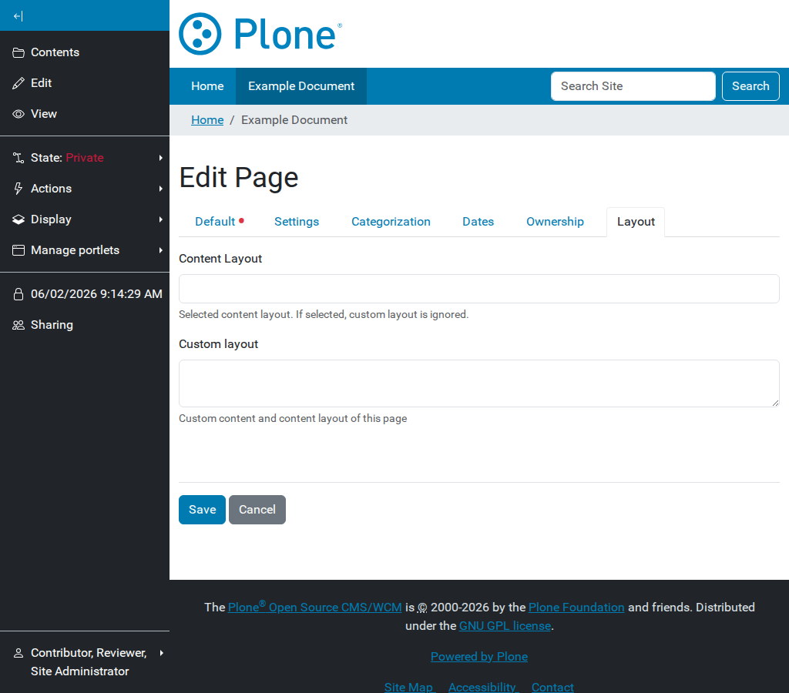

Site layout management#
Site layouts are the high-level templates that define the overall structure of the site. They include common elements like the header, footer, and sidebars, and act as a wrapper for content layouts.
Enable Mosaic site layouts#
To enable site layout functionality in Mosaic for Plone 6, you must ensure that the ILayoutAware behavior is enabled for your content types.
Changing the current site layout#
For content types that are “Layout Aware”, you can change the site layout through the Layout tab or menu.

Selecting a site layout for a specific content item or section.#
Site layouts can be applied at two levels:
Page site layout: Applies only to the current content item.
Section site layout: Applies to the current item and all its children (unless overridden).
Creating site layouts#
Site layouts are typically registered as resources in a theme or a policy package.
A typical site layout is an HTML file using the blocks syntax to define panels.
Example site.html:
<!DOCTYPE html>
<html>
<body>
<header id="header">
<div data-panel="header"></div>
</header>
<main id="main">
<div data-panel="content"></div>
</main>
<footer id="footer">
<div data-panel="footer"></div>
</footer>
</body>
</html>
The data-panel="content" is where the content from the content layout will be injected.
Registering site layouts#
In your package’s manifest.cfg (for layouts), you can register site layouts:
[sitelayout]
title = Full Width
description = A layout without sidebars
file = full-width.html